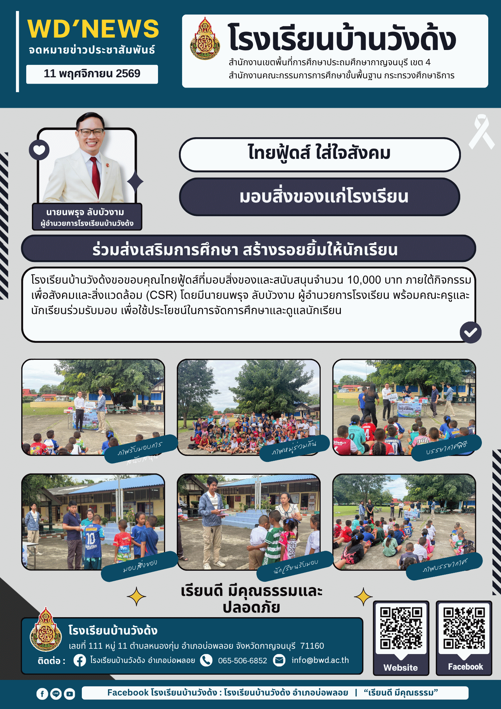

ไทยฟู้ดส์ ใส่ใจสังคม มอบสิ่งของแก่โรงเรียน
โรงเรียนบ้านวังด้งรับมอบสิ่งของและการสนับสนุนจำนวน 10,000 บาทจากไทยฟู้ดส์ ภายใต้กิจกรรมเพื่อสังคมและสิ่งแวดล้อม (CSR)

โรงเรียนบ้านวังด้งรับมอบสิ่งของและการสนับสนุนจำนวน 10,000 บาทจากไทยฟู้ดส์ ภายใต้กิจกรรมเพื่อสังคมและสิ่งแวดล้อม (CSR)
